THE DESIGN REVIEW / OCTOBER 2026
One city.Twelve ways in. Explore the complete experiences. Find the one that makes you want to look closer, imagine your everyday, and start a conversation with Christa Brokke.
Explore the twelve concepts.
Show my shortlist Your shortlist is empty. Switch the filter off, then save the concepts you would like to compare.
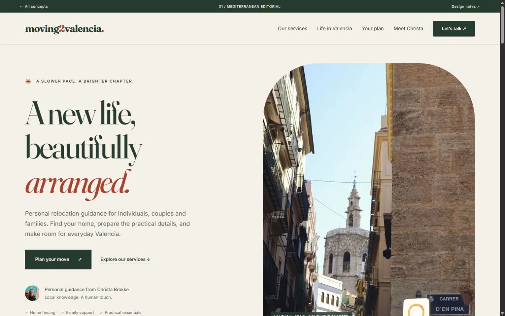
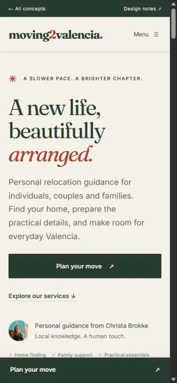
01 / A personal arrival journal
Casa Editorial A personal arrival journal replaces repeated introductory sections. Chosen everyday priorities carry into an editable enquiry.
What changed & what was checked Real Micalet, market, Turia and Malvarrosa photography; a supplied Christa portrait and local fonts. Clearer hierarchy, responsive crops, a retained checklist and a complete preview/copy/edit enquiry path. 375px & 1440px checked No reported axe violations at these sizes Target: 9.5 · independent score pending
Phone test record ↗ · Desktop test record ↗
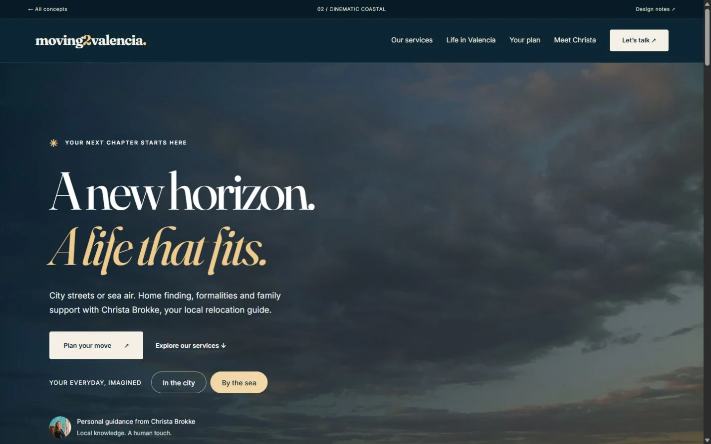
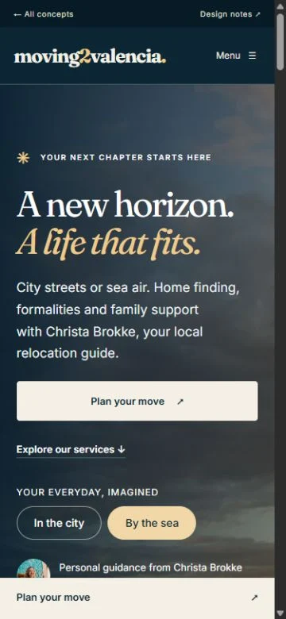
02 / City or sea, carried into your plan
Blue Horizon City or sea becomes a useful choice: the cover, neighbourhood view and enquiry note respond together.
What changed & what was checked Real rooftop and Malvarrosa photographs with a coherent blue-and-gold treatment and local fonts. Repaired narrow-screen overflow; personal service scopes replace unverified package fees. 375px & 1440px checked No reported axe violations at these sizes Target: 9.5 · independent score pending
Phone test record ↗ · Desktop test record ↗
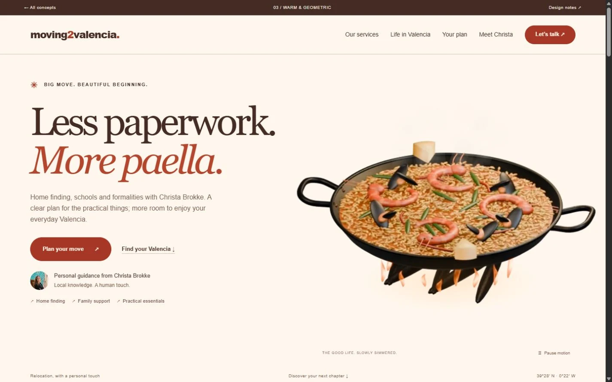
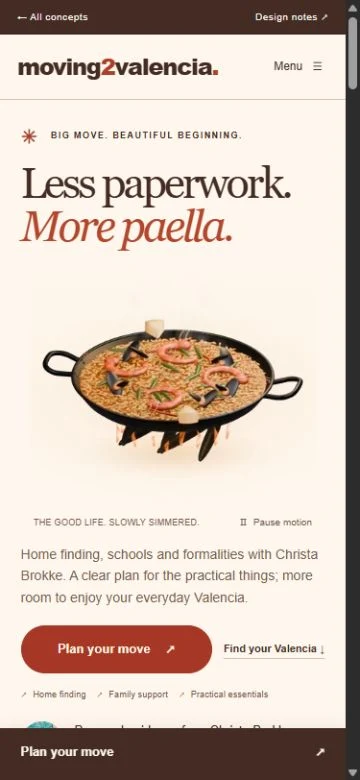
03 / Cooking becomes a daily-life itinerary
Hola, Valencia The tossing paella, flames, steam and slow rotation remain the signature opening, with pause and a reduced-motion alternative.
What changed & what was checked A quieter composition leads directly to a daily-life itinerary; duplicate city introductions are removed. The portable HTML embeds the alpha animated image, so the cooking scene works without a local asset server. 375px & 1440px checked No reported axe violations at these sizes Target: 9.5 · independent score pending
Phone test record ↗ · Desktop test record ↗
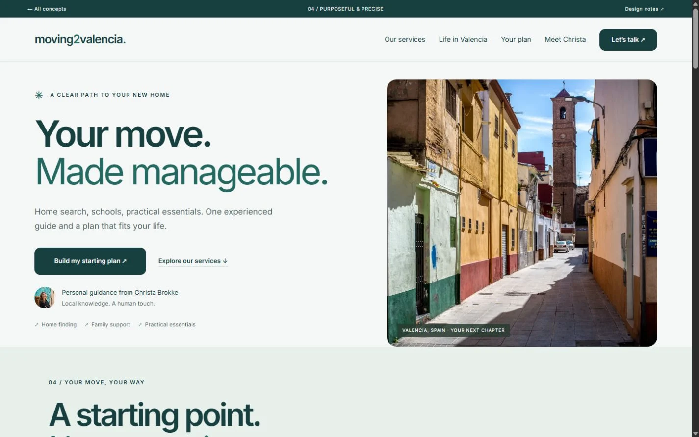
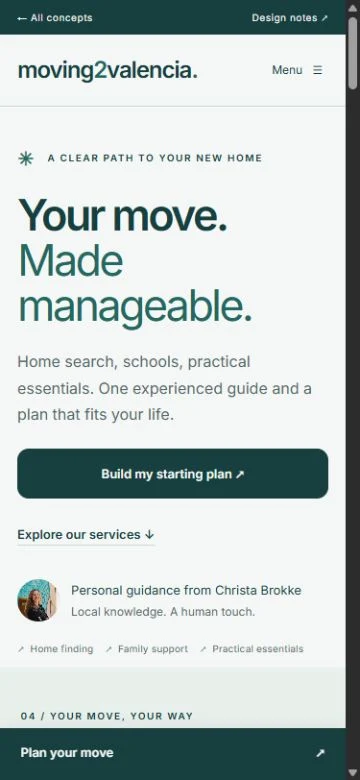
04 / An assembled relocation workspace
The Valencia Plan The planning workspace now follows the opening, before lifestyle sections. Priorities become an ordered starting route.
What changed & what was checked A progress rail responds to the saved checklist. Support choices produce qualitative scope, rather than an invented quote. Real Cabanyal imagery, verified founder identity and an editable enquiry draft with retained fields. 375px & 1440px checked No reported axe violations at these sizes Target: 9.5 · independent score pending
Phone test record ↗ · Desktop test record ↗
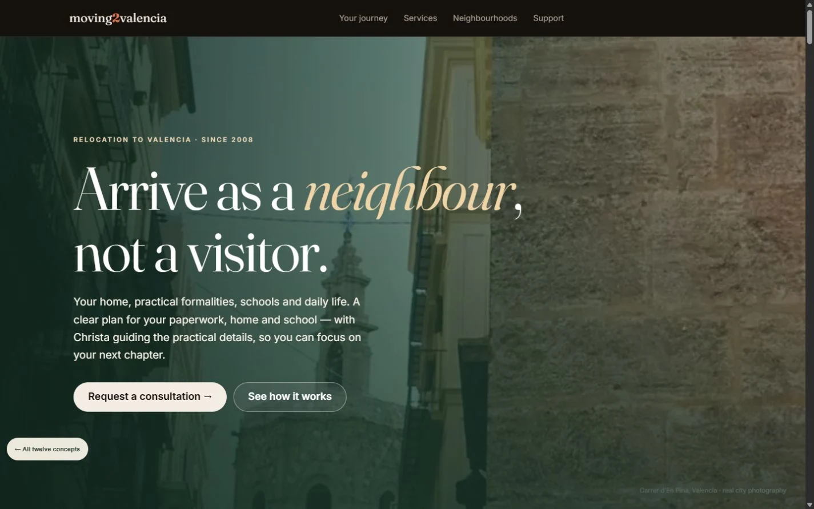
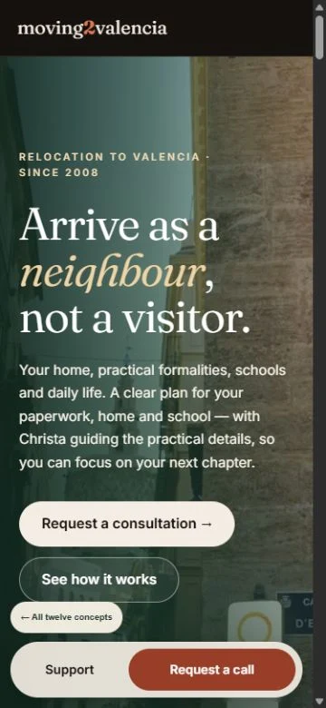
05 / An illustrated route through arrival
Editorial Journey A real Micalet street photograph frames the arrival story. Photo chapters and an illustrated planning route remain interactive.
What changed & what was checked The six planning areas describe questions to discuss, rather than universal legal requirements. Preferred consultation time is a request. The form prepares a draft with copy and edit controls; readable contrast and skip navigation are repaired. 375px & 1440px checked No reported axe violations at these sizes Target: 9.5 · independent score pending
Phone test record ↗ · Desktop test record ↗
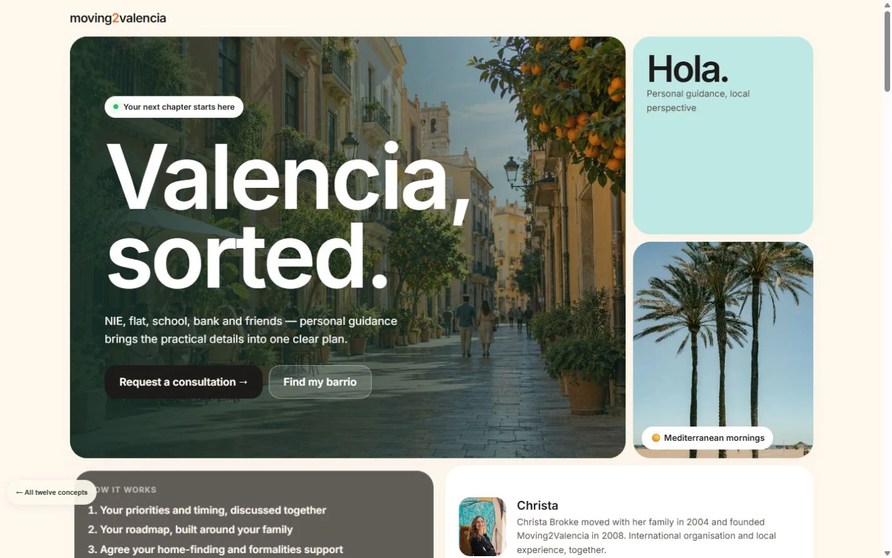
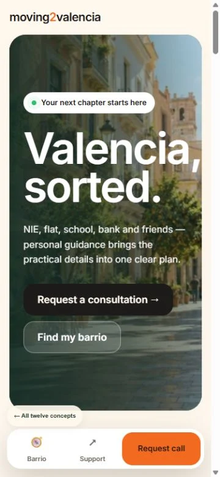
06 / A city board with an editable shortlist
Valencia Bento Neighbourhood cards and the preference matcher feed one editable, locally saved city board.
What changed & what was checked The consultation closes without residual blur or dimming; the founder uses the supplied Christa photograph. Answer percentages are explained honestly; clearer support scopes, contrast and native feedback replace unsupported prices and promises. 375px & 1440px checked No reported axe violations at these sizes Target: 9.5 · independent score pending
Phone test record ↗ · Desktop test record ↗
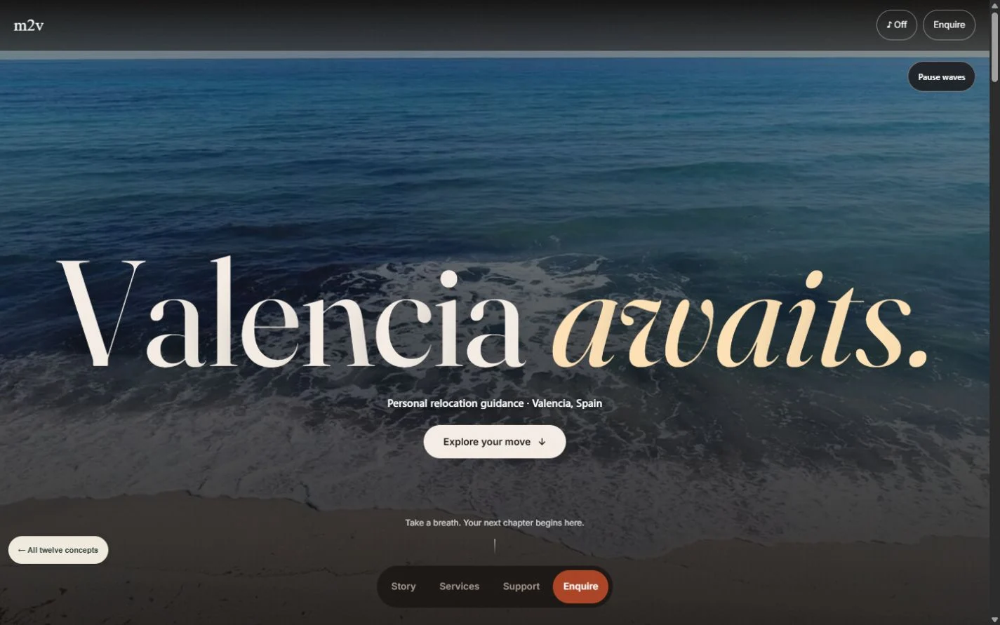
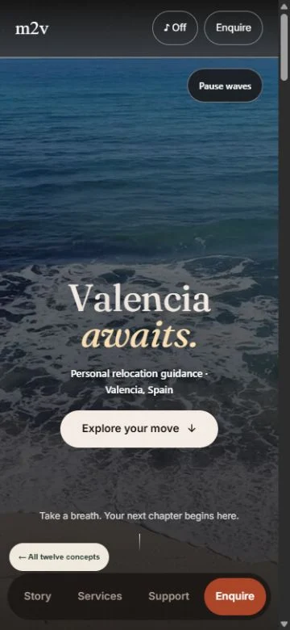
07 / The shoreline leads into practical support
Immersive Valencia Recorded shoreline footage replaces photograph distortion, with phone renditions, a poster, pause and offscreen playback control.
What changed & what was checked A shorter opening leads into practical support; selected household, timing and support inform a personal scope. Readable story cards and text, keyboard-accessible horizontal browsing, and verified founder milestones. 375px & 1440px checked No reported axe violations at these sizes Target: 9.5 · independent score pending
Phone test record ↗ · Desktop test record ↗
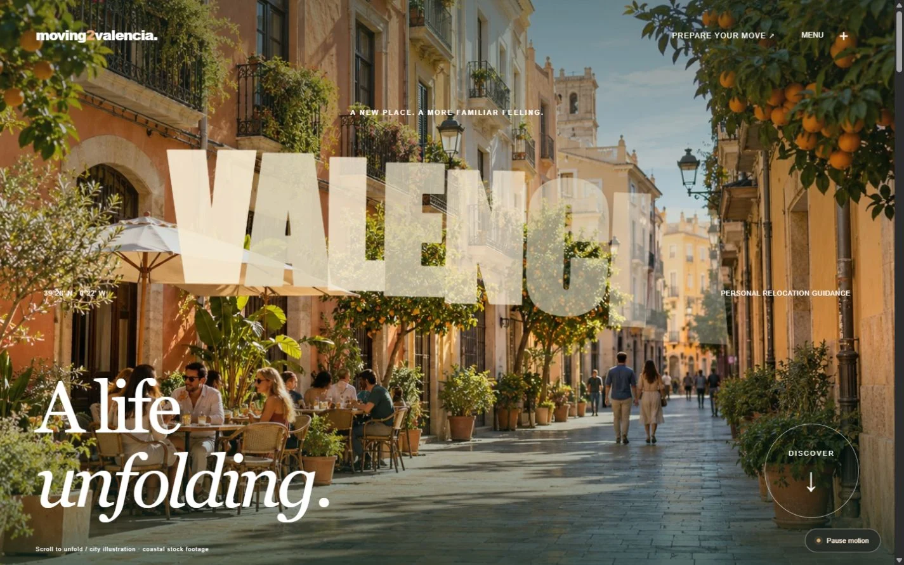
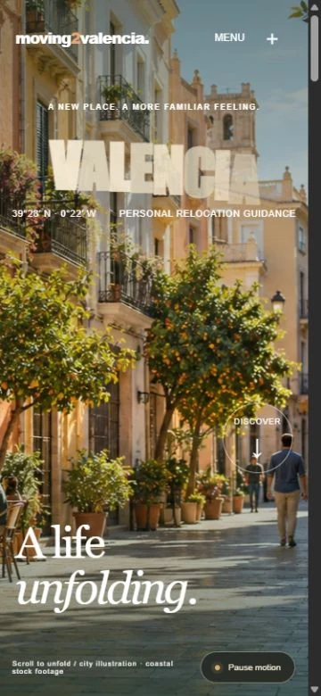
08 / A city-to-sea narrative
Valencia in Motion A shorter city-to-sea sequence leads into a four-stop trail: picture, explore, prepare and talk.
What changed & what was checked The animated miniature and saved places connect to a local draft preview. Decorative photo notes are optional. Native scrolling, scene controls and reduced-motion alternatives remain; generated scenery and atmospheric footage are disclosed. 375px & 1440px checked No reported axe violations at these sizes Target: 9.5 · independent score pending
Phone test record ↗ · Desktop test record ↗
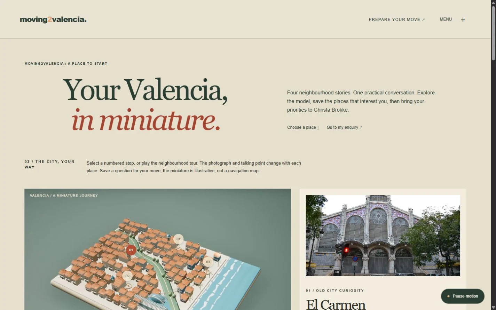
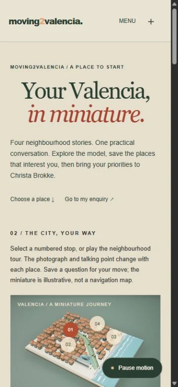
09 / A slowly turning architectural miniature
Valencia 3D Atlas The architectural miniature opens immediately, rather than repeating the cinematic Motion introduction.
What changed & what was checked The native rotating tour, tracked markers, shoreline foam and museum detail remain. Select a stop, pause or restart, then save it to your enquiry. City/sea comparisons and photo notes are optional; the final enquiry has preview/copy/edit controls. Approximate geography is explicitly disclosed. 375px & 1440px checked No reported axe violations at these sizes Target: 9.5 · independent score pending
Phone test record ↗ · Desktop test record ↗
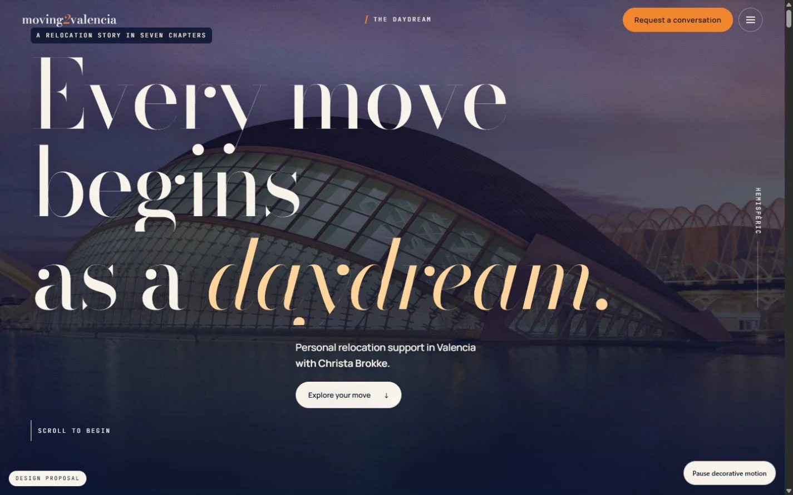
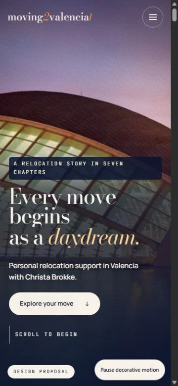
10 / A daydream becomes an ordered move
Azahar The daydream opening now explains relocation support and offers a direct route to the practical plan. The simulated loader is removed.
What changed & what was checked Invented testimonials, match probabilities, counters and fixed delivery timelines are replaced with useful planning content and verified 2004/2008 milestones. Repaired document structure, unique form IDs, native consultation dialog, keyboard timeline, menu visibility, motion controls and draft preview. 375px & 1440px checked No reported axe violations at these sizes Target: 9.5 · independent score pending
Phone test record ↗ · Desktop test record ↗
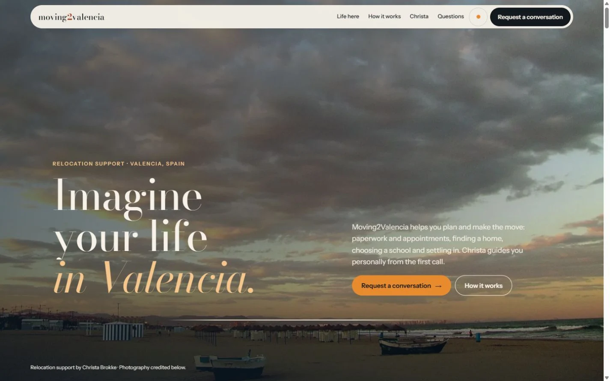
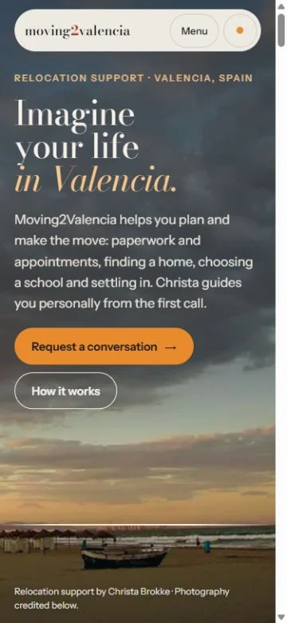
11 / The horizon becomes a doorway
A New Horizon The supplied coastal art direction, real photography and scroll choreography are preserved.
What changed & what was checked Business draft markers are resolved with verified founder information and honest service descriptions; introductory CTAs stay readable. Responsive navigation, keyboard tabs, local animation scripts and a complete validated enquiry flow; the repaired source ZIP matches this edition. 375px & 1440px checked No reported axe violations at these sizes Target: 9.5 · independent score pending
Phone test record ↗ · Desktop test record ↗
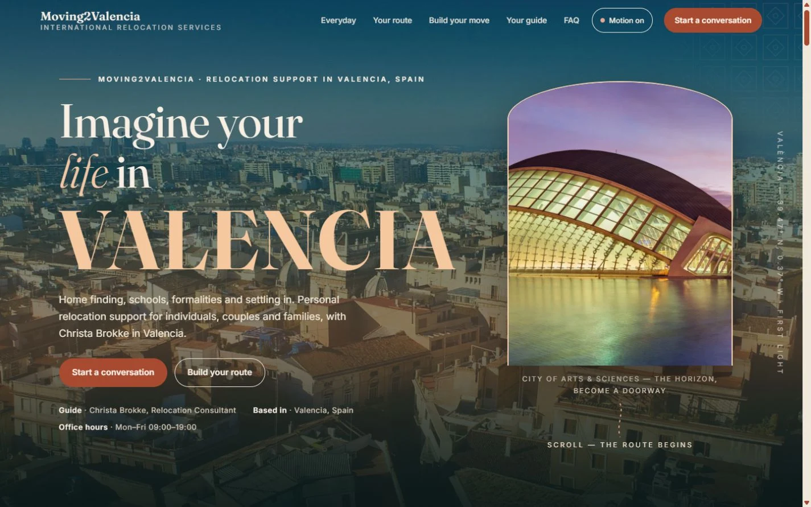
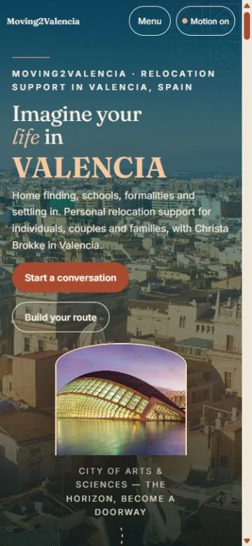
12 / An arrival scene and a route assembled around you
Valencia Arrivals A concise arrival opening leads into a four-part itinerary. The planner comes before the longer service route.
What changed & what was checked Decorative daydream chapters become optional reading paths, preserving their imagery while shortening the primary journey. Verified Christa identity, editable route priorities, native form feedback and distinct naming separate this concept from A New Horizon. 375px & 1440px checked No reported axe violations at these sizes Target: 9.5 · independent score pending
Phone test record ↗ · Desktop test record ↗
GUIDED BY THE SUPPLIED MATRIX
Beauty, witha reason. 40% Design30% Usability20% Creativity10% Content
The revisions focus on a recognisable idea, clear typography, purposeful interaction, mobile layouts and an honest route from curiosity to a relocation enquiry.
The linked records are local Chromium lab checks at 375 × 812 and 1440 × 900. Automated accessibility checks support the review; they do not establish full WCAG conformance. Local timing samples are not field Core Web Vitals or a sustained phone FPS test.
The matrix calls for independent judges, real iPhone and Android testing, Safari, keyboard and screen-reader review, zoom/orientation checks and recorded performance evidence. Those remain part of the final award assessment.
Open the full revision and evidence report ↗ Responsive checks · Reduced motion · Source checks · HTML download checks · Interaction checks
YOUR PERSPECTIVE / SAVED ON THIS BROWSER
Review whatactually ships. Open a concept and explore every interaction before scoring it. Leave unverified criteria blank. A 9 needs a named reason it is best in class; a 10 needs unanimous independent panel agreement.
Open the matrix worksheet All twelve pages use the corrected name Christa Brokke . Founder milestones and service categories were checked against Moving2Valencia’s About page and official relocation services . Scope, fees and availability are discussed personally.
The gallery uses captured views of the revised pages. Real city photographs, generated atmosphere, authored 3D scenes and coastal stock footage have different provenance: photography credits · media notes . Standalone HTML includes images and animation; large downloads are intentionally separate from the lighter web pages.
The supplied source archives remain unchanged. No award result, independent 9.5 rating, confirmed appointment or automatically sent enquiry is represented.